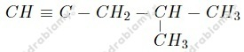
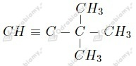
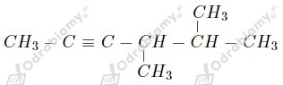
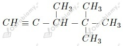
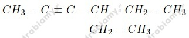
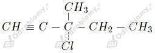
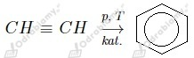

Izomery alkinu C5H8:
1.
2.
3.
Spośród podanych do homologów etynu należą:
a) but-1-yn
c) but-2-yn
e) 3-metylobut-1-yn
wyjaśnienie: Etyn jest alkinem, czyli jego wzór sumaryczny C2H2 odpowiada wzorowi ogólnemu CnH2n-2. Do szeregu homologicznego etynu zaliczamy pozostałe alkiny, czyli inne związki o powyższym wzorze ogólnym, których cząsteczki różnią się od cząsteczki etynu ilością grup -CH2 w łańcuchu i również zawierają jedno wiązanie potrójne.
a) 4-metylopent-2-yn
b) 4-etylo-4-metyloheks-2-yn
c) 3,3-dimetylopent-1-yn
d) 2-metyloheks-3-yn
a)

b)

c)
d)

e)

f)

g)

a)
b)
c)
d)
e)
f)
a)
1.
2.
3.
4.
b)
1.
2.
3. 
4.
1.
2.
Ustalamy stosunek ilościowy, w oparciu o stosunek masowy, atomów w tym związku i wyprowadzamy wzór elementarny CxHyBrz. Masa atomowa węgla to 12 u, wodoru 1 u, zaś bromu 80 u.
Możemy to rozbić na części jako:
Z tego wyliczamy wartości x, y oraz z:
Podstawiamy to do stosunku ilościowego x:y:z i otrzymujemy:
Wzór elementarny oraz rzeczywisty tego związku to